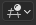
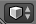
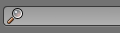
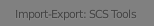
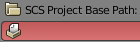
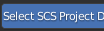

import configurator, os, shutil reload(configurator) configurator.delete_scs_tools_config() # SETUP SCS TOOLS p = configurator.start_it_up(getBundlePath(), "startup.blend") try: mouseMove(Location(30,30)) wait(, 5) click(Pattern().similar(0.95)) click() click(Pattern().similar(0.95)) type("sc") type(Key.ENTER) if find(Pattern().similar(0.90)).right().exists(Pattern().similar(0.90).targetOffset(15,0)): find(Pattern().similar(0.90)).right().click(Pattern().similar(0.65).targetOffset(15,0)) else: find(Pattern().similar(0.90)).right().click(Pattern().similar(0.95).targetOffset(15,1)) wait(1) find(Pattern().similar(0.90)).right().click(Pattern().similar(0.65).targetOffset(15,0)) find(Pattern().exact()) click(Pattern().similar(0.95)) find(Pattern().similar(0.95)).right().click() scs_base = configurator.get_path_property("SCSBasePath") find(Pattern().similar(0.95)).left().paste(Pattern().similar(0.95), scs_base) doubleClick(Pattern().similar(0.95)) if find().below().exists(Pattern().similar(0.95)): find().below().click(Pattern().similar(0.95)) blender_path = configurator.get_path_property("SCSToolsPath") + os.sep + "shader_presets.txt" find().left().paste(Pattern().similar(0.95), blender_path) doubleClick() find(Pattern().exact()) except: configurator.save_screenshot(getBundlePath(), Screen()) raise finally: configurator.close_blender(p)